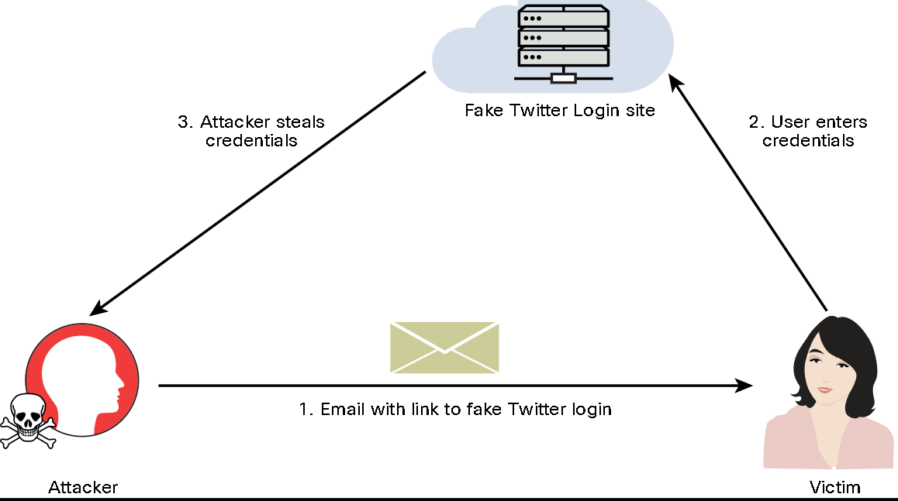

Infrastructure as a Service (IaaS)
Platform as a Service (PaaS)
Software as a Service (SaaS)
7.1.3 Credential Harvesting

Step 1. Launch SET by entering the setoolkit command.
Step 2. Select 1) Social-Engineering Attacks from the main menu.
Step 3. Select 2) Website Attack Vectors.
Step 4. Select 3) Credential Harvester Attack Method.
Step 5. Select 1) Web Templates to use a predefined web template (Twitter).
Step 6. In the menu shown in Example 7-5, enter the IP address of the host that you would like to use to harvest the user credentials (in this case, 192.168.88.225). In this example, SET has recognized the attacking system’s IP address. If this occurs for you, you can just press Enter to select the attacking system’s IP address.
Step 7. Select 3. Twitter, as shown in Example 7-6.
Figure 7-2 - Fake Login Page
Example 7-7 - Harvesting the User Credentials on SET
7.1.5 Privilege Escalation
Vertical
Horizontal
7.1.6 Account Takeover
Login location
Failed login attempts
Phising emails
Malicious OAuth, SAML, or OpenID Connect connections
Abnormal file sharing and downloading
7.1.7 Metadata Service Attacks
7.1.8 Attacks Against Misconfigured Cloud Assets
Identity and Access Management (IAM) Implementations
Federation Misconfigurations
Object Storage
Containerization Technologies
7.1.9 Resource Exhaustion and DoS Attacks
7.1.10 Cloud Malware Injection Attacks
7.1.11 Side-Channel Attacks
7.1.13 Tools and Software Development Kits (SDKs)
--------------------------------------------------------------
7.2 Common Attacks Against Specialized Systems
7.2.2 Attacking Mobile Devices
Reverse Engineering (https://mas.owasp.org/crackmes)
Sandbox Analysis
Spamming
Common Vulnerabilities:
Insecure storage
Passcode and biometrics (https://github.com/OWASP/owasp-mastg/blob/master/Document/0x06f-Testing-Local-Authentication.md)
Certificate pinning (https://github.com/nabla-c0d3/ssl-kill-switch2)
Using known vulnerable components
Root permission execution
Business logic vulnerabiliites
Common Tools:
Burp Suite
Drozer
needle
Mobile Security Framework (MobSF)
Postman
Ettercap
Frida
Objection
Android SDK tools
ApkX
APK Studio
7.2.5 Attacking Internet of Things (IoT) Devices
7.2.6 Analyzing IoT Protocols
Wi-Fi
Bluetooth and Bluetooth Low Energy (BLE)
Zigbee
Z-Wave
LoraWAN
Insteon
Modbus
Siemens S7comm (S7 Communication)
BLE:
Phase 1. Pairing feature exchange
Phase 2. Short-term key generation
Phase 3. Transport-specific key distribution
7.2.8 IoT Security Special Considerations
Fragile Environment (low compute resources)
Availability Concerns (DoS)
Data Corruption (input vulnerability)
Data Exfiltration
7.2.9 Common IoT Vulnerabilities
Insecure defaults
Plaintext communication
Hard-coded configuration
Outdated firmware/hardware
7.2.11 Data Storage System Vulnerabilities
IoT Architecture Layers

IoT Misconfigurations:
Default/blank username/password
Network exposure
Lack of input sanitization
Software and injection vulnerabilities
Error messages and debug handling
7.2.12 Management Interface Vulnerabilities
Intelligent Platform Management Interface (IPMI)
7.2.14 Exploiting Virtual Machines
VM escape vulnerabilities
Hyperjacking
VM repository vulnerabilities
7.2.15 Vulnerabilities Related to Containerized Workloads
Computing Evolution

Securing Container Images

Docker Image Vulnerabilities Scanner:
Anchore’s Grype
Clair
Dagda
kube-bench
kube-hunter
Falco
--------------------------------------------------------------
7.3.1 What Did I Learn in this Module?
Cloud Technologies:
Credential Harvesting
Privilege Escalation
Account Takeover
Metadata Service Attacks
Attacks Against Misconfigured Cloud Assets:
IAM Implementations
Federation Misconfigurations
Object Storage
Containerization Technologies
Cloud Malware Injection Attacks
Side-Channel Attacks
Attacking Mobile Devices:
Insecure storage
Passcode vulnerabilities
Certificate pinning
Usage of known vulnerable components
Execution of activities using root
Business logic vulnerabilities
Attacking Internet of Things (IoT) Devices:
Data Storage System Vulnerabilities
Management Interface Vulnerabilities
Exploiting Virtual Machines
Exploiting Virtual Machines:
VM escape vulnerabilities
Hyperjacking
VM repository vulnerabilities
Vulnerabilities Related to Containerized Workloads
<END>